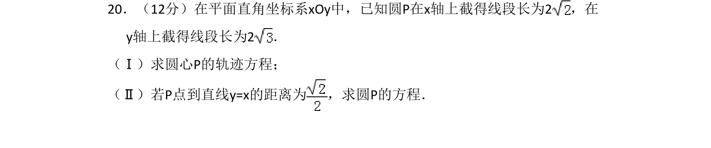
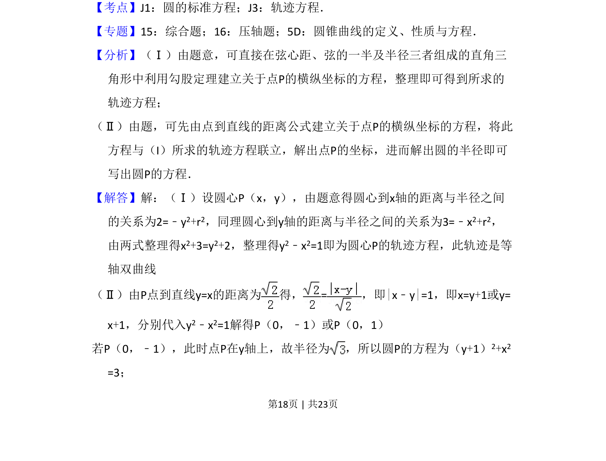
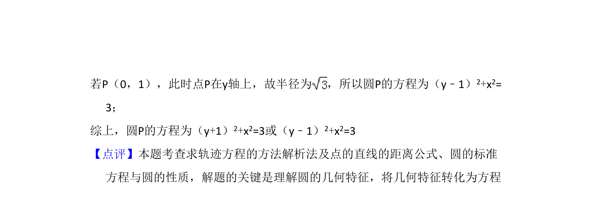

考点：圆标准方程 轨迹方程 点到直线距离公式

求圆心轨迹方程并利用点到直线距离求圆的方程


📄 原 PDF 第 18 页：
素材/真题/吉林/2008-2024·（吉林）数学高考真题/2013年高考数学试卷（文）（新课标Ⅱ）（解析卷）.pdf
20．（12分）在平面直角坐标系xOy中，已知圆P在x轴上截得线段长为2，在 y轴上截得线段长为2． （Ⅰ）求圆心P的轨迹方程； （Ⅱ）若P点到直线y=x的距离为 ，求圆P的方程．
【考点】J1：圆的标准方程；J3：轨迹方程．菁优网版权所有 【专题】15：综合题；16：压轴题；5D：圆锥曲线的定义、性质与方程． 【分析】（Ⅰ）由题意，可直接在弦心距、弦的一半及半径三者组成的直角三 角形中利用勾股定理建立关于点P的横纵坐标的方程，整理即可得到所求的 轨迹方程； （Ⅱ）由题，可先由点到直线的距离公式建立关于点P的横纵坐标的方程，将此 方程与（I）所求的轨迹方程联立，解出点P的坐标，进而解出圆的半径即可 写出圆P的方程． 【解答】解：（Ⅰ）设圆心P（x，y），由题意得圆心到x轴的距离与半径之间 的关系为2=﹣y2+r2，同理圆心到y轴的距离与半径之间的关系为3=﹣x2+r2， 由两式整理得x2+3=y2+2，整理得y2﹣x2=1即为圆心P的轨迹方程，此轨迹是等 轴双曲线 （Ⅱ）由P点到直线y=x的距离为 得，=，即|x﹣y|=1，即x=y+1或y= x+1，分别代入y2﹣x2=1解得P（0，﹣1）或P（0，1） 若P（0，﹣1），此时点P在y轴上，故半径为 ，所以圆P的方程为（y+1） 2+x2 =3；